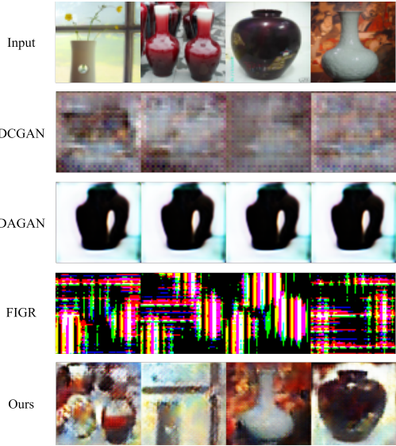
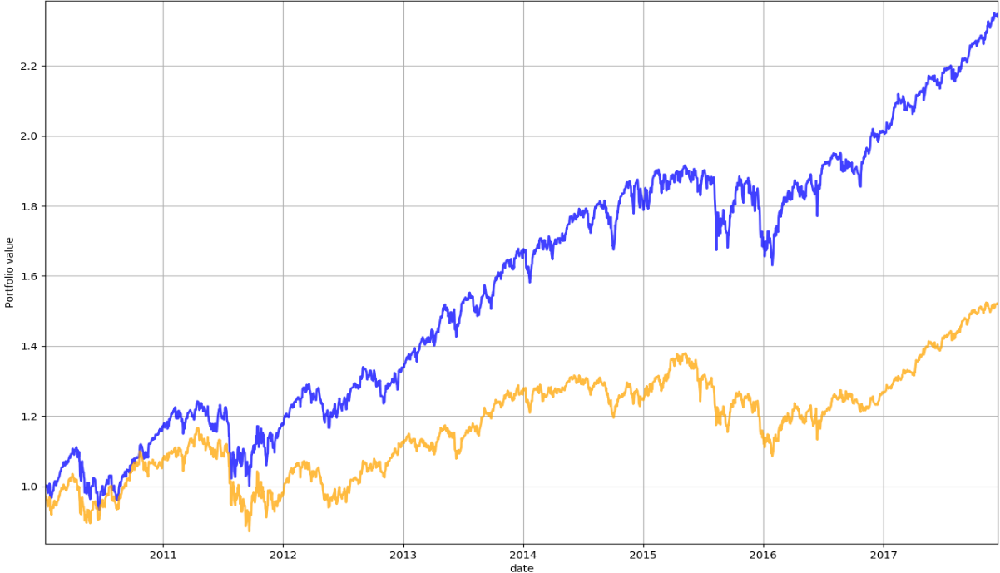
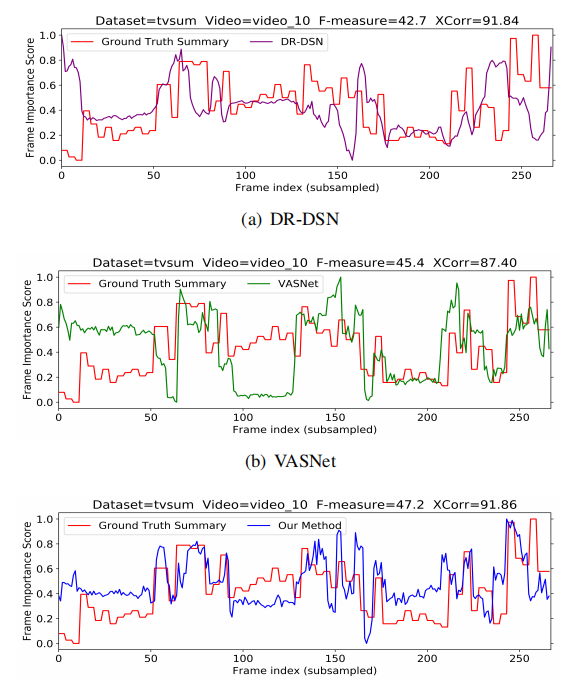
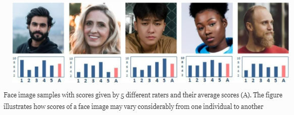

|
|
Senior lecturer, MSc Supervisor, PhD Co-supervisor，
Department of Computer Science,
East China University of Science and Technology.
NO.130 Meilong Road, Xuhui District
Shanghai, China
E-mail: yfangli[at]ecust[dot]edu[dot]cn
|
About me
Dr. Fangli Ying (Github profile：fangli-ying.github.io) is currently a senior lecturer at the Department of Computer Science, East China University of Science and Technology (ECUST). He supervises both Master's and PhD students, and serves as a co-supervisor for 3 international PhD students and a supervisor for 11 MSc students. He is also a visiting professor at the International College of Digital Innovation, Chiang Mai University (CMU), Thailand. His research focuses on developing artificial intelligence industrial applications to solve industrial problems through multidisciplinary research. He collaborates with several labs at ECUST, including the State Key Laboratory of Bioreactor Engineering, Department of Finance, and National Engineering Laboratory for Big Data Distribution and Exchange Technologies. He has authored many articles in top journals and conferences, such as the IEEE transactions, Applied Intelligence, Neural Computing and Applications, and ICME. Dr. Ying previously received the Best Runner-up Award from ACM SIGSPATIAL GIS conference and the ESRI European scholar Award. His current research interests include Computer Vision, Reinforcement Learning for Portfolio Management, and Bioinformatics.
Research
My research interests include:
Computational aesthetics and applications
Few-shot Generative Models
Deep Reinforcement for Portfolio Management
Deep Generative Models for Protein Design
Current work
-
Few-shot Image Generation
As a type of effective deep learning models, the Generative Adversarial Networks (GANs) are capable of synthesizing new realistic images and estimate the potential distribution of the samples utilizing adversarial learning. Nevertheless, the conventional GANs require a large amount of training data samples for producing plausible results. Inspired by the capacity of humans to quickly learn new concepts from a small number of examples, Fast Adaptive Meta-Learning (FAML) based GAN and encoder network is proposed in this study for few-shot image generation. This model demonstrates its capability to generate new realistic images from previously-unseen target classes with only a small number of examples required. By adopting two latent vectors, an enhanced algorithm is proposed to prevent mode collapse. Our model is able to improve few-shot image generation with the lowest FID score and highest IS on MNIST, Omniglot, VGG-Faces, and miniImageNet dataset. Moreover, it has been demonstrated the relativistic discriminator is effective in improving the overall visual quality of few-shots generation and is more than 10 times faster to achieve model convergence with as few as one-fourth of parameters required.

-
Reinforcement Learning for Portfolio Management
Although Deep Reinforcement Learning (DRL) models have made remarkable achievements in the financial trading, it is surprising that most of the literature ignores the possible risk of rare occurrences of catastrophic events and the effect of the worst-case scenarios on trading decisions. In this paper, we first develop a novel deep RL algorithm to control the risk of portfolio investment, while maximizing the α percentile expectation based on the distribution of future returns. A real world data set is used to validate the performance of our proposed models. The experimental results show that our proposed models outperform the market.

-
Video Summarization
With the exponential growth of video data, video summarization techniques are urgently needed for reducing people’s efforts in the videos' content exploration by generating succinct but informative summaries from original lengthy videos. Though supervised video summarization approaches have demonstrated the state-of-the-art performance, unsupervised methods are still highly demanded due to resourcefully expensive human annotations and the subjectiveness of video summarization tasks. In this paper, a novel unsupervised-based Deep Self-attention Recurrent summarization network with Reinforcement Learning (DSR-RL) for video summarization is proposed. The model can learn the input video sequence and suggest the key-shot summary without additional human annotations by integrating self-attention, BRNN, and reinforcement learning mechanisms. The DSR-RL improves not only importance score through the attention map vector of self-attention network but also the diversity of summaries via the reward function of reinforcement learning. Our method outperforms the state-of-the-art unsupervised video summarization methods on both SumMe and TVSum datasets.

-
Image Quality Assessment
Automatic facial beauty assessment has recently attracted a growing interest and achieved impressive results. However, despite the obvious subjectivity of beauty perception, most studies are addressed to predict generic or universal beauty and only few works investigate an individual’s preferences in facial attractiveness. Unlike universal beauty assessment, an effective personalized method is required to produce a reasonable accuracy on a small amount of training images as the number of annotated samples from an individual is limited in real-world applications. In this work, a novel personalized facial beauty assessment approach based on meta-learning is introduced. First of all, beauty preferences shared by an extensive number of individuals are learnt during meta-training. Then, the model is adapted to a new individual with a few rated image samples in the meta-testing phase. The experiments are conducted on a facial beauty dataset that includes faces of various ethnic, gender, age groups and rated by hundreds of volunteers with different social and cultural backgrounds. The results demonstrate that the proposed method is capable of effectively learning personal beauty preferences from a limited number of annotated images and outperforms the facial beauty prediction state-of-the-art on quantitative comparisons.

Under review
Irina Lebedeva, Fangli Ying*, Yi Guo, Taihao Li, "GAN Semantics for Personalized Facial Beauty Synthesis and Enhancement" JVCIR
Fangli Ying*, Ziyue Luo, Aniwat Phaphuangwittayakul and Yunze Li, "Enhancing Multimodal Video Summarization via Temporal and Semantic Alignment" ECAI 2024
Fangli Ying*, Ru Fan and Aniwat Phaphuangwittayaku, "Optimizing Risk Adaptation in Financial Trading with Multi-Scale LSTM Autoencoder and Predictive Transformer" ECAI 2024
Fangli Ying*, Zhihong Zhang, Aniwat Phaphuangwittayakul and Chaoqian Ouyang, "Enhancing Facial Beauty while Maintaining Facial Identity: A Novel Framework for Facial Aesthetic Enhancement" ECAI 2024
Li Yunze, Yu Zhiling, Chen Ruiyao Jiang Shufan, Fangli Ying*, Yang Yadan " Toward Seamless Integration of Facial Features and Geometric Details for high-fidelity 3D Human Avatar Reconstruction" PG 2024
Recent publications
Aniwat Phaphuangwittayakul, Fangli Ying*, Yi Guo, Guohui, Surachai Santisookrat, "Adaptive Adversarial Prototyping Network for Few-Shot Prototypical Translation". Journal of Visual Communication and Image Representation 2023 (CCF C类期刊，SCI在线发表，if=2.887)[pdf]
Aniwat Phaphuangwittayakul, Fangli Ying*, Yi Guo, Liting Zhou, Nopasit Chakpitak, "Few-shot image generation based on contrastive meta-learning generative adversarial network". , 1-14, The Visual Computer 2022 (CCF C类期刊，SCI在线发表，if=2.601)[pdf]
F. Ying* , A.Y., Phaphuangwittayakul, A.#, Yi G. "Meta-FAVAE: Toward Fast and Diverse Few-shot Image Generation via Meta-Learning and Feedback Augmented Adversarial VAE". ICLR 2022 DGM workshop [ICLR 2022 Conference workshop]
Lebedeva, I.,F. Ying*, Guo, Y.* "Personalized facial beauty assessment: a meta-learning approach", The Visual Computer , (2022). (CCF C类期刊，SCI在线发表，if=2.601) [pdf]
Lebedeva, I., Guo, Y.* & F. Ying, "MEBeauty: a multi-ethnic facial beauty dataset in-the-wild", Neural Computing and Application, Jun. 2021, 195, pp. 116595. (CCF B类期刊，SCI在线发表，if=5.606) [pdf][code]
A.Y., Phaphuangwittayakul, A.#, Yi G., F. Ying#, "Fast Adaptive Meta-Learning for Few-shot Image Generation", IEEE Transaction on Multimedia, Nov. 2021, 124, pp. 308-314. (CCF B类期刊，SCI在线发表，if=5.452) [pdf][code]
A. Phaphuangwittayakul, Y. Guo, F. Ying*, "An optimal deep learning framework for multi-type hemorrhagic lesions detection and quantification in head CT images for traumatic brain injury", Applied Intelligence, Dec. 2021, 209, pp. 106478. (CCF B类期刊，SCI收录，if=5.086) [pdf]
A. Phaphuangwittayakul#, Y. Guo, F. Ying#, W. Xu and Z. Zheng, "Self-Attention Recurrent Summarization Network with Reinforcement Learning for Video Summarization Task," in 2021 IEEE International Conference on Multimedia and Expo (ICME), Shenzhen, China, 2021 pp. 1-6. （CCFB类会议） [pdf][code]
Dawod, A.Y.#, Phaphuangwittayakul, A.#, F. Ying#, Angkurawaranon S., Chakpitak N., Adaptive Slices Brain Hemorrhage Segmentation based on SLIC Algorithm, In 2020 17th Engineering Letter, 2020（EI数据库）
Lebedeva, I; Guo, Y; F. Ying Transfer Learning Adaptive Facial Attractiveness Assessment Journal of Physics: Conference Series; Bristol Vol. 1922, Iss. 1, (May 2021).（EI数据库）
Note: * indicates the corresponding author. # indicates equal contribution.
Academic service
PC & TC
More details at CISE in ECUST
Projects
Industrial Bioprocessing, 03.2021-Present, Funded by State Key Laboratory of Bioreactor Engineering in ECUST
Built a multi-variety time series data monitoring system for large-scale cell culturing.
Developed a generative neural network for optimizing sequence fitness and diversity.
Designed an enzyme with optimal Michaelis constants from structural features.
Reinforcement Learning for Portfolio Management, 06.2021-Present, With Department of Finance in ECUST
Provided a deep machine learning solution to the portfolio management problem.
Co-supervised a PhD student on the topic of Portfolio Management.
Adapted deep reinforcement learning methods to the dynamic cryptocurrency market.
Developed a deep learning feature extractor for rotation strategies.
Smart City Project for Shanghai City, 06.2017-02.2019, Funded by National Engineering Laboratory for Big Data Distribution and Exchange Technologies
Built the industrial park GIS map for the government smart city platform
Developed an e-commerce strategy for Nanjing Road Shopping Area
Analyzed the house prices in downtown by integrating the spatial weighted regression model
Smart Chat Generation for English Online Education , 09.2020-06.2021, Funded by World Foreign Language Education in JuneYao Co. Ltd
Provided NLG and TTS solutions for smart chat generation.
Integrated a VAE for customized prosody feature generation in TTS.
Studied generating multiple accurate and diverse chat responses for the same post on short-text conversation tasks.
Data-driven knowledge system for Smart Customer Service Assistant, 05.2016-02.2017, Funded by KKH Global
Previous Experience during Ph.D
Worked as a GIS Expert in the World Bank and published GIS data visualization from the Climate Change Center of Central Asia.
Working as a PhD candidate in Computer Science and cooperating a project with National Center of Geocomputation(NCG) in Ireland
Teaching
Ph.D. Supervision
A.Y., Phaphuangwittayakul Ph.D. Thesis: Deep Generative Models for Few-Shot Image Generation and its Applications Graduated, Now Teaching in ChiangMai University Irina Lebedeva Ph.D. Thesis: Computational Facial Attractiveness: Assessment and Synthesis in Generic and Personalized Scenarios Graduated,Now Working in Zhijiang Laboratory
Teaching in Computer Science
UnderGraduate Projects
- 2023, 3D Human Body Reconstrcution with Multi-View Images For Metaverse, Students Research Program
- 2021, A Study and Application of Video Editing Techniques Based on 3D Deep Convolutional Networks, Students Research Program (1 Software Patent)
- 2020, Financial Data Visualization System Based on Quantitative Strategy Models, Students Research Program (1 Software Patent)
- 2019, Development of an AI-Based Automatic Assessment System for Teaching Chinese as a Foreign Language, Students Research Program (1 Software Patent)
Education
Ph.D., Computer Science, Maynooth University, 09.2013
B.Sc., Software Engineering, Zhejiang University, 06.2019
Main Courses: C Programming, Embedded Systems, Computer Network and Communication, Software Engineering.
Competitions and awards
Work experience updated by 2021
Lectuer in Computer Science in ECUST, 12.2013-Present
Developing the newest AI algorithms and work with Financial Department and Biology Department for industrial problems
Developing the Computational Human Visual Systems
supervising 3 international Ph.D ; supervising many postgraduates and undergraduates
Teaching Image processing, computer vision, information security, AI, introduction to computer science ;
Visiting Profosser, in ICDI in CMU, 02.2019-Present
Instructed two undergraduate and 5 Ph.D students in Digital Innovation
Tracked, studied, reproduced, and improved up-to-date Digital Innovation methods
Published papers on Digital Innovation
Research Scientist, in KKH, 07.2017-06.2018
Working as Chief Scientist in KKH global company and leading the team to develop the E-commence SaaS projects for the Top brand companies
Built a Visual System for User Experience Design for Top E-commence brands
Built a User Comments Management SaaS Systems for Top E-commence brands
Research Assistant, World Bank, 04.2013-09.2013
Recruitment of Master and PhD students.
|